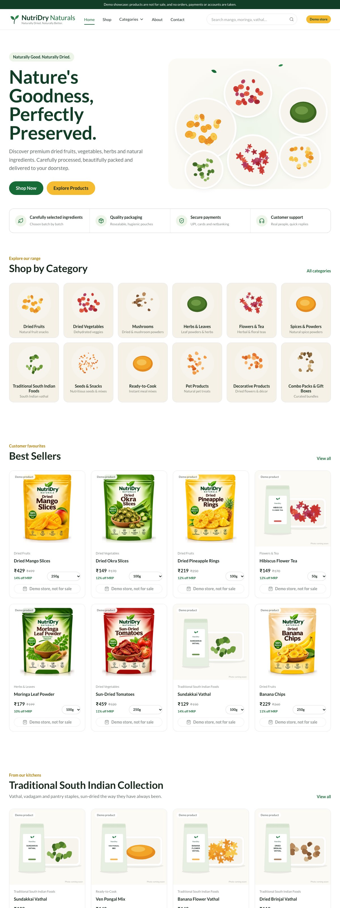
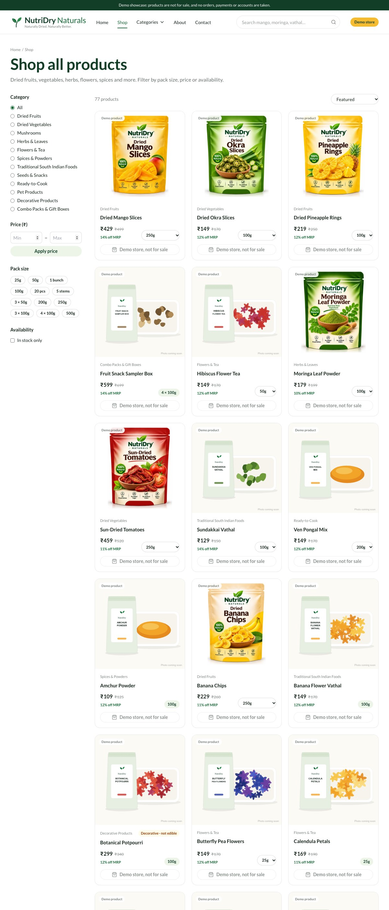
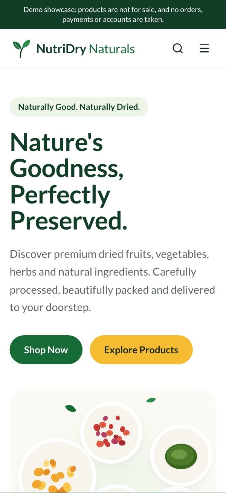
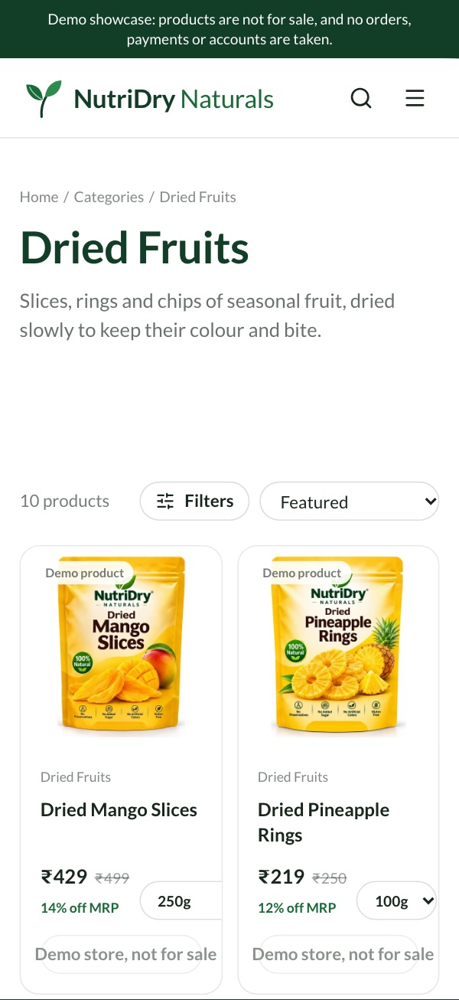
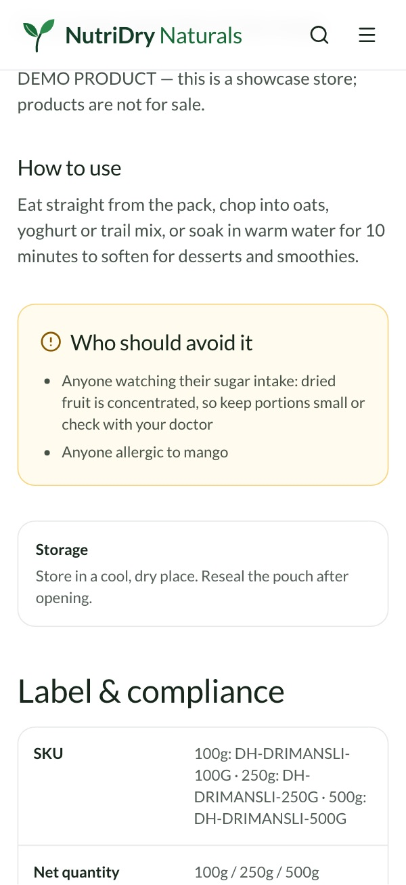
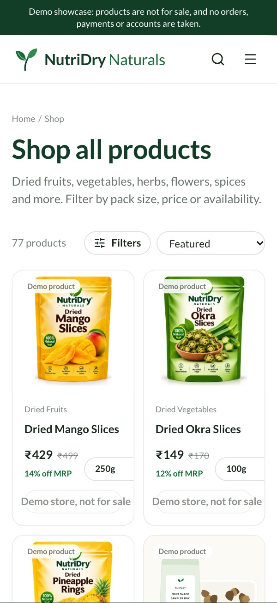

Web store · demo
NutriDry Naturals
Naturally Dried. Naturally Better. A storefront for an Indian dried-foods brand: dried fruits, vegetables, mushrooms, herbs and tea, spices, South Indian foods, seeds, and pet and décor botanicals. 30 of the 77 products show real NutriDry pack photos, covering every dried fruit, vegetable and mushroom and five herbs; the rest still use illustrated placeholders. Content is honest by default: no invented claims, and ratings only from real reviews.
The live demo is a read-only showcase: browse the catalogue, search and filter, but nothing is for sale and there is no checkout, sign-in or admin.
- A home page with categories, best sellers and collections.
- A shop with all 77 products in one continuous grid, with filters, sort and search.
- Category pages with pack photos, pack sizes, price and MRP.
- Product pages with benefits, how to use it, who should avoid it, storage, and label and compliance details.
- White pages and Lato throughout.
On a computer




On a phone




